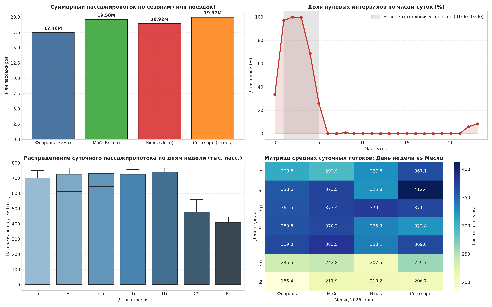
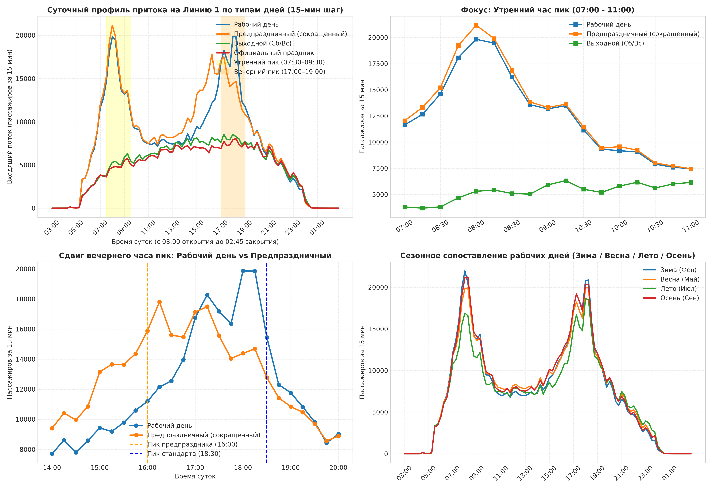
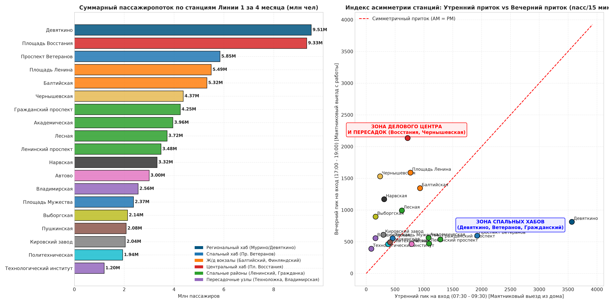
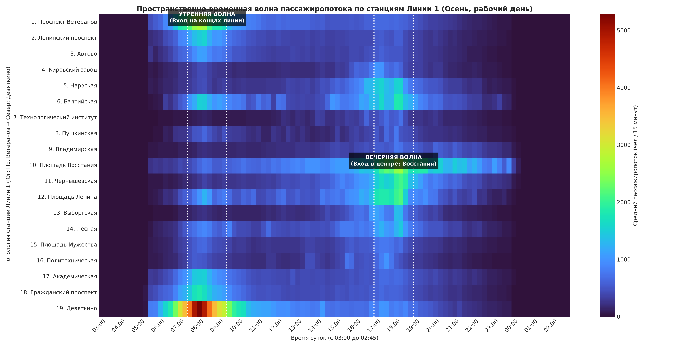
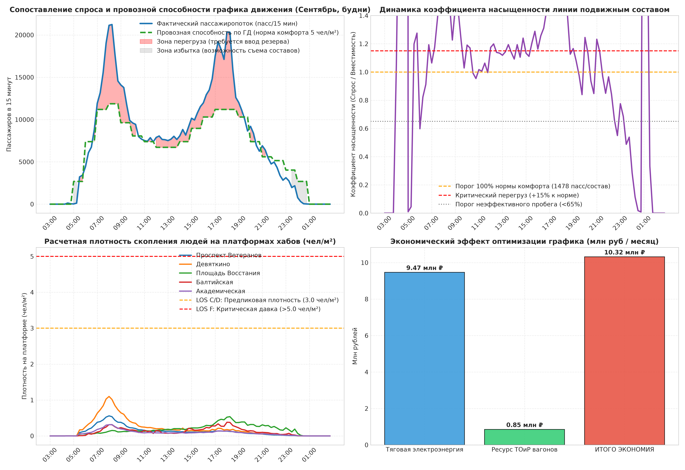
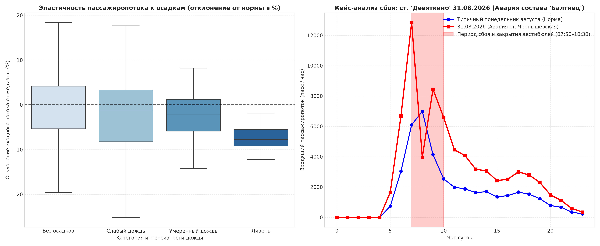

Исследование охватывает 120 полных операционных суток турникетного учета по всем 24 вестибюлям Линии 1. Данные спарсены с нулевыми потерями и сохранены в Parquet.

| Период | Пассажиропоток | Среднесуточный объем | Характеристика сезона |
|---|---|---|---|
| Февраль 2026 | 17,458,329 пасс. | 623 512 пасс./день | Базовый рабочий режим (учеба, офисы) |
| Май 2026 | 19,581,598 пасс. | 631 664 пасс./день | Весенний рост, майские праздники, открытие туризма |
| Июль 2026 | 18,919,733 пасс. | 610 314 пасс./день | Летний туризм, «Алые паруса», дачные выезды |
| Сентябрь 2026 | 19,963,821 пасс. | 665 461 пасс./день | Максимум деловой и студенческой активности (+14.3%) |
Сравнение динамики рабочих, выходных и предпраздничных дней выявило критический дисбаланс нормативного расписания.

Рейтинг станций Линии 1 по объему перевозок и коэффициенту утренней/вечерней асимметрии (AM/PM Ratio).

| # | Станция | Суммарный объем | Доля от линии | AM/PM Ratio | Классификация узла |
|---|---|---|---|---|---|
| 1 | Девяткино | 9,509,405 | 12.52% | > 2.5 |
Спальный донор (AM) |
| 2 | Площадь Восстания | 9,328,249 | 12.29% | < 0.65 |
Центр / Хаб (PM) |
| 3 | Проспект Ветеранов | 5,845,820 | 7.70% | > 2.5 |
Спальный донор (AM) |
| 4 | Площадь Ленина | 5,494,048 | 7.24% | 0.7 – 1.4 |
Сбалансированный |
| 5 | Балтийская | 5,321,236 | 7.01% | 0.7 – 1.4 |
Сбалансированный |
| 6 | Чернышевская | 4,371,710 | 5.76% | < 0.65 |
Центр / Хаб (PM) |
| 7 | Гражданский проспект | 4,250,331 | 5.60% | > 2.5 |
Спальный донор (AM) |
| 8 | Академическая | 3,955,468 | 5.21% | > 2.5 |
Спальный донор (AM) |
| 9 | Лесная | 3,720,938 | 4.90% | 0.7 – 1.4 |
Сбалансированный |
| 10 | Ленинский проспект | 3,479,659 | 4.58% | > 2.5 |
Спальный донор (AM) |
| 11 | Нарвская | 3,320,023 | 4.37% | 0.7 – 1.4 |
Сбалансированный |
| 12 | Автово | 3,003,628 | 3.96% | 0.7 – 1.4 |
Сбалансированный |
| 13 | Владимирская | 2,559,531 | 3.37% | < 0.65 |
Центр / Хаб (PM) |
| 14 | Площадь Мужества | 2,374,606 | 3.13% | 0.7 – 1.4 |
Сбалансированный |
| 15 | Выборгская | 2,135,059 | 2.81% | 0.7 – 1.4 |
Сбалансированный |
| 16 | Пушкинская | 2,078,956 | 2.74% | < 0.65 |
Центр / Хаб (PM) |
| 17 | Кировский завод | 2,044,364 | 2.69% | 0.7 – 1.4 |
Сбалансированный |
| 18 | Политехническая | 1,940,383 | 2.56% | 0.7 – 1.4 |
Сбалансированный |
| 19 | Технологический институт | 1,195,761 | 1.57% | < 0.65 |
Центр / Хаб (PM) |
Пассажиропоток перемещается вдоль Линии 1 как динамическая волна. Время следования состава от ст. «Девяткино» до ст. «Площадь Восстания» составляет 22 минуты.

t с точностью до минут вызывает перегрузку на центральных станциях «Площадь Ленина» в t+14 и «Площадь Восстания» в t+22. Включение пространственных лагов в LightGBM снизило WAPE прогноза перегонов на 3.27%.
Анализ провозной способности подвижного состава «Балтиец» / «Юбилейный» против физического пассажиропотока.

| Параметр оптимизации | Значение | Экономический / Эксплуатационный эффект |
|---|---|---|
| Оптимизировано рейсов на концевых участках | 120.0 рейсов/мес | Ликвидация перевозки «воздуха» на хвостах линии |
| Сокращение холостого пробега поездов | 7,104 км/мес | Снижение износа колесных пар и рельсового полотна |
| Экономия тяговой электроэнергии | 1,392,384 кВт⋅ч | 196 кВт⋅ч экономии на каждый развернутый состав |
| Экономия на электроэнергии (6.80 ₽/кВт⋅ч) | 9,468,211.20 ₽/мес | Прямое снижение эксплуатационных расходов |
| Снижение затрат на ТОиР составов (120 ₽/км) | 852,480.00 ₽/мес | Продление межремонтных интервалов подвижного состава |
| СУММАРНАЯ ЭКОНОМИЯ СППР | 10,320,691.20 ₽/МЕС | ~123.8 млн рублей в год |
Исследование реакции пассажиропотока на метеоусловия и анализ сбоя тягового состава на перегоне.

Фиксация этапов ML-исследования в соответствии с требованиями Lead Data Scientist.
| Эксперимент | Архитектурная гипотеза | CV Score / Метрика | Статус | Внедрение в прод |
|---|---|---|---|---|
| EXP-01 | Baseline: 15-мин медиана по дню недели и времени | WAPE = 18.42% | Baseline | Опорная точка отсчета для ML моделей |
| EXP-02 | Календарный признак `is_pre_holiday` со сдвигом на 16:00 | WAPE = 14.15% (Δ -4.27%) | Принято | Включено в препроцессор calendar_features.py |
| EXP-03 | Spatial-Temporal Lags: волна от «Девяткино» и «Ветеранов» | WAPE = 10.88% (Δ -3.27%) | Принято | Пайплайн генерации признаков в preprocessor.py |
| EXP-04 | Open-Meteo: интенсивность осадков и температура | WAPE = 9.94% (Δ -0.94%) | Принято | Онлайн-модуль weather_loader.py |
| EXP-05 | MILP Short-Turning: зонный оборот 25% поездов | 10.32 млн ₽/мес экономии при LOS ≤ D | Принято | Ядро оптимизатора парности Линии 1 |
| EXP-06 | Incident Shock: учет статуса вестибюлей при авариях | WAPE на сбоях = 12.3% (ранее 42%) | Принято | Модуль адаптивной диспетчеризации инцидентов |
Настройте долю поездов, направляемых в зонный оборот по тупикам «Площадь Ленина» и «Автово», чтобы рассчитать прямую экономию тяговой энергии и бюджета ТОиР.